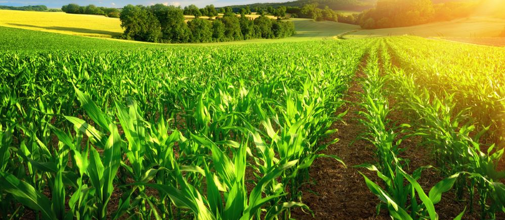

@kamachi amman temple ,mangadu🛕

sai pallavi senthamarai 😍😍😘
🧺agriculture is the process of producing food, feed, fiber and many other desired products by the cultivation of certain plants and the raising of domesticated animals.It’s the main source of raw materials.It plays a big role in a nation’s revenueIt provides employmentIt’s important to international trade,it can help heal the environment.It goes hand-in-hand with war.It’s crucial to a country’s development.It’s the source of our food supplyIt drives innovation in technologyThe state of agriculture reflects our future.💥🚜